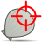
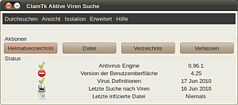
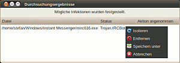

ClamAV
Dieser Artikel wurde für die folgenden Ubuntu-Versionen getestet:
Ubuntu 16.04 Xenial Xerus
Ubuntu 14.04 Trusty Tahr
Zum Verständnis dieses Artikels sind folgende Seiten hilfreich:
ClamAV  ist ein freier und quelloffener Virenscanner, der über die Kommandozeile bedient wird. Es gibt auch den Dienst
ist ein freier und quelloffener Virenscanner, der über die Kommandozeile bedient wird. Es gibt auch den Dienst clamd (ClamAV-Daemon), der als Hintergrunddienst gestartet werden kann, um Aufrufe (zur Virensuche) von anderen Programmen zu erhalten. Weiterhin gehört freshclam zum Paket, welches für die Aktualisierung der Virensignaturen zuständig ist.
Warum ein Virenscanner für Linux?¶
Es ist bekannt, dass Computerschädlinge in der GNU/Linuxwelt keine große Rolle spielen - zumindest im Vergleich zu anderen Betriebssystemen wie z.B. Windows. Daher ist ein Virenscanner für eine GNU/Linux-Desktopinstallation nicht wirklich notwendig. ClamAV eignet sich aber trotzdem sehr gut für heterogene Umgebungen (z.B. parallele Installationen von GNU/Linux und Windows, in denen Dateien unter GNU/Linux heruntergeladen und geprüft werden, bevor sie an Windows "weitergereicht" werden), zum Prüfen von Mailanhängen oder zum Einsatz in Kombination mit Dritt-Programmen wie z.B. Samba oder einem Mail-Server.
Installation¶
Folgende Pakete müssen installiert [1] werden:
clamav
clamav-freshclam
 mit apturl
mit apturl
Paketliste zum Kopieren:
sudo apt-get install clamav clamav-freshclam
sudo aptitude install clamav clamav-freshclam
Optional kann man sich auch die komplette Dokumentation lokal speichern:
clamav-docs
mit apturl
Paketliste zum Kopieren:
sudo apt-get install clamav-docs
sudo aptitude install clamav-docs
Hinweis:
Die offiziellen Ubuntu-Quellen stellen nicht immer die aktuellste Version von ClamAV bereit. Daher kann beim Aufruf des Virenscanners eine Meldung wie "...This version of the ClamAV engine is outdated..." erscheinen. Wer zwingend die neuste Version benötigt, muss ClamAV selbst aus den Quellen kompilieren. Die Quellen stehen auf der Homepage von ClamAV zum Download bereit. Die Virensignaturen sind jedoch auch für die älteren Versionen identisch, d.h. der Einsatz einer "älteren" Version ist nicht zwangsläufig sicherheitskritisch.
Viren suchen - clamscan¶
Um nach Viren zu suchen, öffnet man ein Terminal [2] und ruft den Scanner mit folgendem Befehl auf:
clamscan OPTIONEN DATEI/VERZEICHNIS
Wird clamscan ohne Optionen und Datei- bzw. Verzeichnis-Auswahl gestartet, scannt clamscan das aktuelle Verzeichnis und gibt eventuell gefundene Viren ohne weitere Aktionen aus. Alternativ kann clamscan auch unter Angabe einer bzw. mehrerer Dateien und/oder Verzeichnis(se) gestartet werden, wie z.B.
sudo clamscan /home/user/downloads/ /home/anderer_user/
Hinweis:
Will oder muss man Home-Verzeichnisse anderer Benutzer scannen, muss man clamscan mit Root-Rechten starten. Gleiches gilt natürlich auch für bestimmte Systemverzeichnisse, auf die nur Root Zugriff hat.
clamscan kennt sehr viele Optionen, von denen im Folgenden nur einige aufgeführt werden:
| clamscan - Optionen | |
| Option | Beschreibung |
-i oder --infected | Gibt nur infizierte Dateien aus (und nicht alle Dateien die gescannt werden). |
--remove | Entfernt infizierte Dateien. Mit Vorsicht benutzen! |
--move=VERZEICHNIS | Verschiebt alle infizierten Dateien in das Verzeichnis VERZEICHNIS. |
-r oder --recursive | Scannt Unterverzeichnisse rekursiv. |
--no-archive | Alle Archiv-Dateien werden nicht gescannt. |
-h oder --help | Zeigt alle Optionen von clamscan an. |
Dies sind nur einige grundlegende Optionen von clamscan. Alle Optionen erhält man über den Aufruf von clamscan mit der Option -h bzw. --help, in den Manpages, im Handbuch (falls installiert) zu finden im Verzeichnis /usr/share/doc/clamav-doc/clamdoc.pdf oder auf der Homepage von ClamAV.
Virensignaturen aktualisieren - freshclam¶
freshclam dient dazu, die Virensignaturen für ClamAV (bzw. clamscan usw.) zu aktualisieren. Nach der Installation wird bereits automatisch der Daemon gestartet, der die Signaturen in definierten Abständen aktualisiert. Diese Abstände lassen sich in der Datei /etc/clamav/freshclam.conf festlegen, voreingestellt ist 24 mal am Tag.
Die Aktualisierung kann aber auch manuell erfolgen:
sudo freshclam
Ebenso kann man den Daemon manuell starten:
freshclam -d
Weitere Infos zu freshclam erhält man über
freshclam --help
in den Manpages oder den oben genannten Informationsquellen.
ClamAV Daemon - clamd¶
Möchte man den Dienst clamd nutzen, benötigt man auch:
clamav-daemon
mit apturl
Paketliste zum Kopieren:
sudo apt-get install clamav-daemon
sudo aptitude install clamav-daemon
Der Daemon läuft dann als Dienst [3] im Hintergrund. Bei der Installation wird ein entsprechendes Startskript unter /etc/init.d/clamav-daemon angelegt und der Dienst automatisch gestartet. Das Skript kann über die üblichen Parametern start, stop und restart bedient werden. Die Konfiguration des Daemon (d.h. welche Aktionen bei Virenfund ausgeführt werden, Scantiefe, Scanoptionen, etc.) sind in der Datei /etc/clamav/clamd.conf hinterlegt. clamd kann auch mittels
sudo dpkg-reconfigure clamav-base
konfiguriert werden. Eine ausführliche Anleitung findet man in der Dokumentation oder auf der Homepage von ClamAV, Verweise siehe Abschnitt clamscan.
Grafische Benutzeroberflächen¶

ClamTk¶
Mit ClamTk steht auch eine grafische Benutzeroberfläche zur Verfügung. Über das Paket
clamtk (universe)
mit apturl
Paketliste zum Kopieren:
sudo apt-get install clamtk
sudo aptitude install clamtk
wird die Benutzeroberfläche installiert. Die Version aus den Quellen ist allerdings nicht aktuell und man bekommt eine entsprechende Meldung angezeigt. Man kann deshalb ClamTk via Fremdpaket aktualisieren. Dies hat keine Auswirkung auf die Aktualität der Virensignatur.
Paket manuell herunterladen und installieren¶
Von der Projektseite auf Github werden
DEB-Pakete  angeboten.
Die unterstützten Ubuntuversionen und Architekturen werden aufgelistet.
Nachdem man sie für die korrekte Ubuntuversion und Architektur geladen hat, müssen DEB-Pakete noch installiert werden.
angeboten.
Die unterstützten Ubuntuversionen und Architekturen werden aufgelistet.
Nachdem man sie für die korrekte Ubuntuversion und Architektur geladen hat, müssen DEB-Pakete noch installiert werden.
Hinweis!
Fremdpakete können das System gefährden.
Bedienung¶
 Man findet das Programm danach bei Ubuntu-Varianten mit einem Anwendungs-Menü unter "Zubehör -> Virenscanner". Die wesentlichen Funktionen von ClamTk können direkt über den Hauptbildschirm aufgerufen werden.
"Heimatverzeichnis": Scannt das Heimatverzeichnis rekursiv.
"Datei": Scannt eine Datei.
"Verzeichnis": Scannt ein Verzeichnis rekursiv.
"Verlassen": Beendet das Programm.
Die Menüleiste bietet erweiterte Scan- und Einstellungsmöglichkeiten.
"Durchsuchen": Bietet weitere Möglichkeiten eine Datei oder ein Verzeichnis zu durchsuchen.
"Ansicht": Hier kann man sich die Logdateien anzeigen lassen oder den Ausgabebereich leeren.
"Isolation": Zur Verwaltung isolierter Dateien.
"Erweitert": Bietet Zugriff auf den Zeitplaner und das Einstellungsmenü.
"Hilfe": Hier kann man das Updatemenü aufrufen. Um die Virendefinitionen zu aktualisieren, muss ClamTk mit Root-Privilegien gestartet werden.
Zeitplaner¶
Mit dem Zeitplaner kann man tägliche Scan- und Updatevorgänge steuern. Man stellt einfach die jeweils gewünschte Uhrzeit ein und aktiviert sie mit "Hinzufügen". "Entfernen" setzt die Einstellungen wieder zurück.
Einstellungen¶
Hier kann man verschiedene Einstellungen bezüglich des Start- und Scanverhaltens treffen und einen Proxy konfigurieren. Alle in der „Weißen Liste“ eingetragenen Verzeichnisse werden beim Scanvorgang ausgelassen.
Durchsuchungsergebnisse¶
Am Ende eines jeden Scanvorgangs öffnet sich das Fenster "Durchsuchungsergebnisse", in dem alle gefundenen infizierten Dateien angezeigt werden. Falls keine Viren entdeckt wurden, bleibt das Fenster leer. Mit einem Rechtsklick auf die infizierte Datei kann man verschiedene Aktionen auslösen. 
"Isolieren": Schiebt die Datei in die Quarantäne.
"Entfernen": Die Datei wird direkt gelöscht und nicht in den Müll verschoben.
"Speichern unter": Verschiebt die Datei in ein gewünschtes Verzeichnis.
"Abbrechen": Nimmt keine Aktion vor.
Integration in andere Programme¶
Es gibt diverse Möglichkeiten für die Nutzung von ClamAV in Kombination mit anderen Programmen.
Nautilus-Plugin¶
Wer ClamAV zusammen mit dem Dateimanager Nautilus einsetzen möchte, der kann sich die dafür nötige Erweiterung ab Ubuntu 14.04 mit dem Paket
clamtk-nautilus (universe)
mit apturl
Paketliste zum Kopieren:
sudo apt-get install clamtk-nautilus
sudo aptitude install clamtk-nautilus
installieren.
Thunderbird¶
Für ältere Thunderbird Versionen (2.x) gab es das Plugin clamdrib. Seit März 2015 wird allerdings eine Weiterentwicklung unter dem Namen clamdrib LIN in den offiziellen Mozilla-Quellen angeboten, das allerdings nur bis einschließlich Version 56 verwendbar ist.
Weitere Möglichkeiten¶
Eine weitere Einsatzmöglichkeit ist im Artikel Amavis-Spam-Virenfilter beschrieben. Eine komplette Liste gibt es auf der ClamAV Homepage .
Probleme und Lösungen¶
Fehlermeldung beim 1. Start von ClamAV¶
Bekommt man beim 1. Start von clamscan die Fehlermeldung
LibClamAV Error: cli_loaddbdir(): No supported database files found in /var/lib/clamav ERROR: Can't open file or directory
dann muss man zuerst über den Befehl freshclam die Virensignaturen aktualisieren. Danach sollte der Aufruf von clamscan auch funktionieren.
Clamtk mit Startproblemen unter Kubuntu¶
Unter KDE kann es aufgrund fehlender GNOME-Icons zu Startproblemen von Clamtk kommen.
Das Thema ist dem Hersteller bekannt, siehe https://code.google.com/p/clamtk/issues/detail?id=38 (Ticket) und https://code.google.com/p/clamtk/wiki/UpdateNotesWarning (Update-Note).
Dort wird die Installation des Gnome-Icon-Themes empfohlen:
gnome-icon-theme-full
mit apturl
Paketliste zum Kopieren:
sudo apt-get install gnome-icon-theme-full
sudo aptitude install gnome-icon-theme-full
Fazit¶
Wie oben bereits erwähnt, ist ClamAV freie Software (FOSS). Es ist auch kein Geheimnis, dass ClamAV im Vergleich zu kommerziellen Virenscannern langsamer ist, wobei die Erkennungsrate im Laufe der Entwicklung stark verbessert wurde, so dass ClamAV mit (einigen) kommerziellen Scannern durchaus mithalten kann. Dies sind aber definitiv keine Gründe, die von der Nutzung - in welcher Form auch immer - von ClamAV abhalten sollen, bspw. als erste Schutzlinie in einem heterogenen Netzwerk oder um auf einem Dualbootsystem die Windowspartition "von außen" zu prüfen.
 Programmübersicht
Programmübersicht- Erstellt mit Inyoka
-
 2004 – 2017 ubuntuusers.de • Einige Rechte vorbehalten
2004 – 2017 ubuntuusers.de • Einige Rechte vorbehalten
Lizenz • Kontakt • Datenschutz • Impressum • Serverstatus -
Serverhousing gespendet von